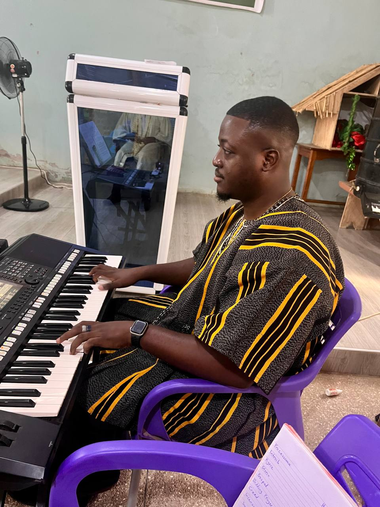
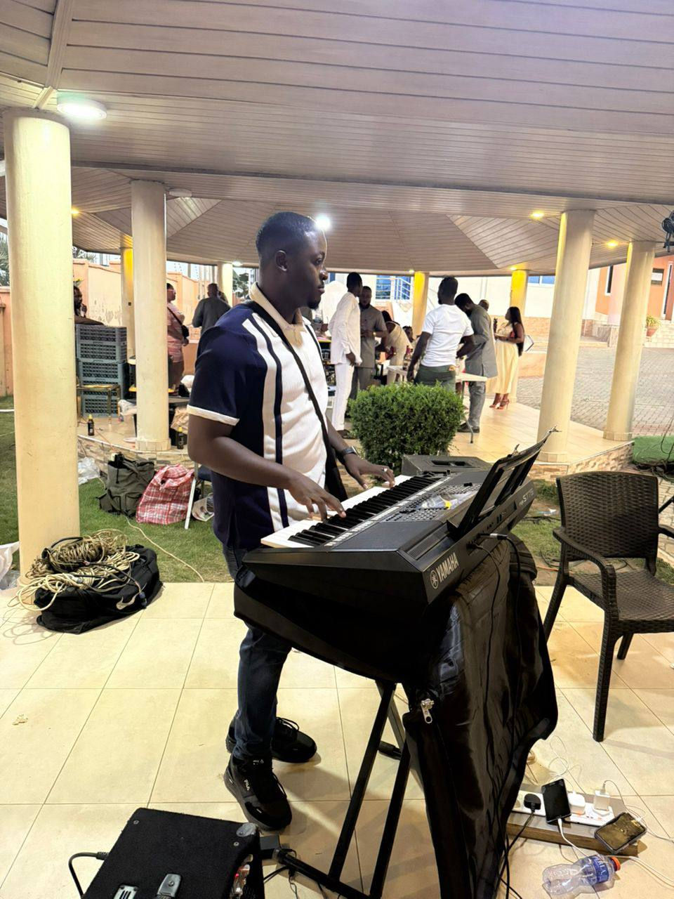
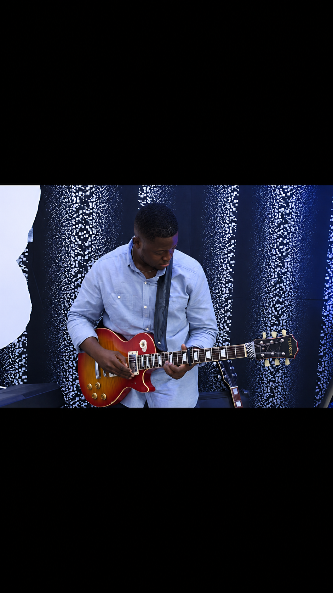
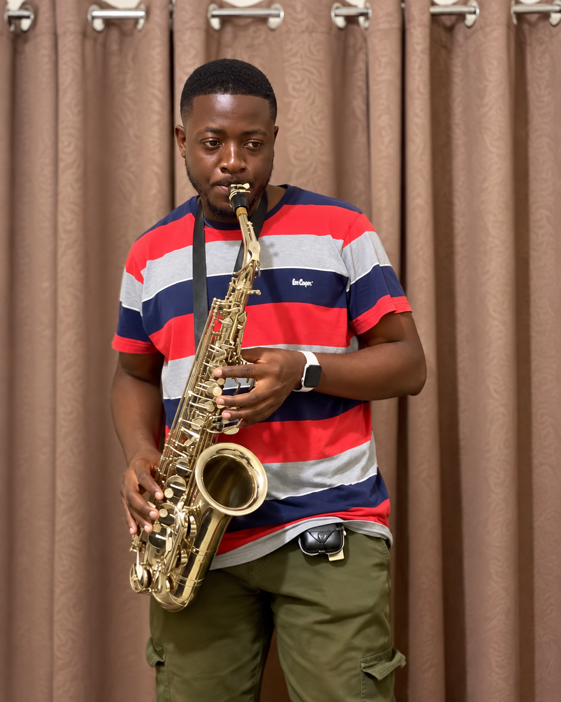

My path began with visual design and information systems, then moved through operations and process work, and later into digital forensics, cybersecurity and cyber intelligence.
The software and systems side grew from the same interest: how systems behave, where workflows break, and how they can be improved.
Distinction · CGPA 3.75. IT Auditing, Mobile Forensics, Ethical Hacking, Cyber Crime & Risk Management. Capstone: Android Data Acquisition & Analysis.
Physical security, encryption, disaster recovery, network security via hands-on virtual labs.
Information Security, HCI, Business Intelligence. Research: "Impact of AIS on Company Profitability."
Elective Maths, Physics, Chemistry, Geography. Most Disciplined Student. Best in Geography.
Outside technology, music is one of the longest-running parts of my life. I serve as Music Director for my Catholic church choir, arranging and teaching hymns, classical works, anthems and highlife. I play five instruments and also tutor piano, helping learners develop technique, theory and musicianship.
Music gives me a different kind of discipline from technical work: listening closely, recognising structure, coordinating people and turning individual parts into something coherent.




The common thread is systems: understanding how they work, where they fail, how they can be investigated, and how they can be built better.
Explore Projects